cooktub
The best Youtube cooking channels in one place
Featured Channels
{{ channel.snippet.title }}
{{ channel.statistics.videoCount | number }} videos
{{ channel.statistics.subscriberCount | number }} subscribers
The best Youtube cooking channels in one place
{{ channel.statistics.videoCount | number }} videos
{{ channel.statistics.subscriberCount | number }} subscribers